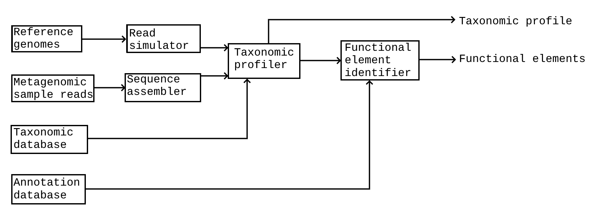

Developer Guide
Stelaro is a metagenomic software tool written in Rust that can be used through the command line and a Python binding.
Data Analysis Pipeline
Note
This pipeline is subject to changes
The pipeline classifies contigs into taxonomic groups to profile metagenomic samples and identifies annotated sequences in metagenomic samples such as antimicrobial resistance genes.
Input
- Quality-controlled reads from a sequencing device.
The pipeline itself does not comprise facilities that can trim adapters and discard low-quality reads.
External tools like Trimmomatic are to be used to pre-process raw reads.
Synthetic reads generated from reference genomes. Used when training the models. The reference genomes are taken from the NCBI.
A read simulator generates data from taxonomic profiles [1]. This is more representative of real metagenomic samples than random sampling.
A Taxonomy database to profile the reads such as GTDB or the one of the NCBI.
A Sequence annotation database to identify elements of interest such as antimicrobial resistance genes. Retrieved from the CARD database [2].
Data Processing
- The sequence assembler creates contigs from pre-processed sequence reads.
This component uses either De Bruijn graphs or overlap-layout-consensus to assemble the reads.
The assembler will be either hardware-accelerated on GPUs or performed by an external tool.
- The sequence processor converts the contigs into a compressed format.
Techniques used in natural language processing, such as tokenization (BERT), are to be used by this component.
Conversion into tetra-mers are also considered.
- The taxonomic binning model uses processed contigs to assign them to taxonomic profiles.
This is currently envisioned as an attention-based neural network, but a rule-based program will be used if performances are disappointing.
- The element identifier finds relevant elements in the genomes, such as AMR genes.
This is envisioned as an attention-based neural network.
Output
Taxonomic profiles ascribing taxonomic levels to reads.
Functional element predictions ascribing potential functions to reads.
Organization
The source code is organized as follows:
- src: Rust source code.
data: Download data.
io: Functions to read and write genome sequence files.
kernels: Hardware acceleration kernels.
utils: Utility modules (e.g. console output formatting).
References
Alexander Fritz, Patrick Hofmann, Stefan Majda, Elisabeth Dahms, Helene Marie Draese, Till R Lesker, Peter Belmann, Matthew Z DeMaere, Aaron E Darling, Alexander Sczyrba, Andreas Bremges, and Alice C McHardy. Camisim: simulating metagenomes and microbial communities. Microbiome, 7(1):17, 2019. URL: https://doi.org/10.1186/s40168-019-0633-6, doi:10.1186/s40168-019-0633-6.
Dirk Hackenberger, Hamna Imtiaz, Amogelang R. Raphenya, Brian P. Alcock, Hendrik N. Poinar, Gerard D. Wright, and Andrew G. McArthur. Carpdm: cost-effective antibiotic resistome profiling of metagenomic samples using targeted enrichment. bioRxiv, 2024. URL: https://www.biorxiv.org/content/early/2024/03/30/2024.03.27.587061, arXiv:https://www.biorxiv.org/content/early/2024/03/30/2024.03.27.587061.full.pdf, doi:10.1101/2024.03.27.587061.
Alison B.R. McIntyre, Rachid Ounit, Ebrahim Afshinnekoo, and others. Comprehensive benchmarking and ensemble approaches for metagenomic classifiers. Genome Biology, 18(1):182, 2017. URL: https://doi.org/10.1186/s13059-017-1299-7, doi:10.1186/s13059-017-1299-7.